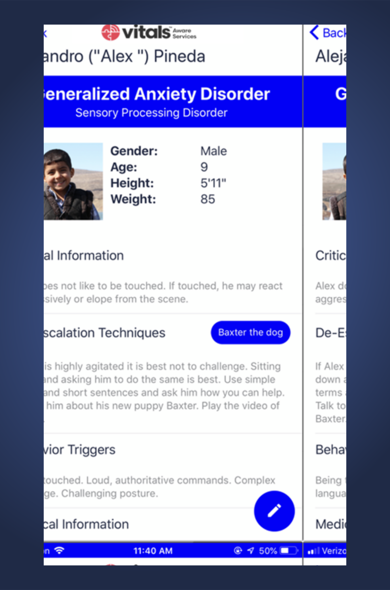

Reducing Friction, Boosting Vitals Subscriptions
Vitals is a digital medical ID for vulnerable individuals in emergencies. It creates secure digital medical profiles containing essential information about a person’s conditions, behaviors, and care needs.
During emergencies, first responders can instantly access these profiles, enabling them to understand and respond appropriately to individuals who may have difficulty communicating.
This bridges critical information gaps when it matters most.
Despite its usefulness, 92% of users don’t subscribe after signing up.
We interviewed users from this 92% to understand why they chose not to subscribe.
Lack of trust
Users didn’t trust the product enough to commit before understanding its value.
70% of participants expressed discomfort sharing personal medical information before fully understanding the app’s purpose and value.

Confusing plan selection
Participants struggled with unclear terminology and weren’t informed upfront that some plans were only available in certain states.

Poor visual design
Key elements like sample profiles and free trial information were frequently missed due to weak visual hierarchy.

A redesigned signup journey focused on trust, clarity, and momentum—helping users understand value before committing.
Building trust
The redesigned welcome screen pairs a clear value proposition with visible privacy and data protection standards.
Privacy Policy and About Us links are surfaced early for reassurance.
Easier plan selection
Plans are shown side-by-side using plain language, with clear state availability and a prominent free trial.

Streamlined data collection
Long forms are broken into small steps, each explaining why the information is required and how it will be used.
Quick access to help
Help options remain visible throughout the flow to reduce anxiety and drop-off.
Based on usability testing and behavior analysis, the redesigned journey was estimated to increase subscriptions by 16%.
Methods
- Heuristic evaluation of signup and subscription flows
- Usability testing with think-aloud session
- Post-test interviews focused on subscription intent
Participant Pool
- Patients, caregivers, and users who identify as both
- Diverse age groups, races, and ethnicities
- Varied levels of technical proficiency
- Experience interacting with emergency service personnel
Key Sources of Insight
- User Research Findings: Actionable insights from usability tests and evaluations
- Business Model Analysis: Review of how Vitals converts users beyond app signups
- Design Best Practices: Applied principles around trust, persuasion, and emotional design